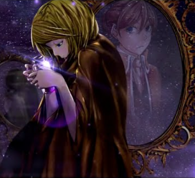

Riliane Lucifen d'Autriche
Daughter of Evil

Now, kneel to me!

If only we could be reborn...
Bio
Riliane Lucifen d'Autriche, aka The Daughter of Evil (original:
リリアンヌ
＝ルシフェン＝
ドートゥリシュ)
is the former queen of Kingdom of Lucifenia.
Her obsession with the demon of Pride made her one of the main figures in
Evillious Chronicles.
Her life included:
- getting separated from her twin brother
- becoming a queen at the age of 14
- falling in love and getting rejected
- starting genocidal war against neighboring green kingdom
- facing revolution and getting sentenced
- losing her twin brother
- fleeing to port town
- living under another name as a nun
- repenting of her sins
Info
| Born | December 27, EC 485 |
| Died | December, EC 562 |
| Gender | Female |
| Hair color | Blonde |
| Eye color | Blue |
| Height | 154 cm |
| Alignment | Neutral Evil |
| Temperament | Choleric |
| Voiced by | Kagamine Rin |
| Favourite food | Brioche |
Stats
| Parameter | Value | Comment |
|---|---|---|
| Strength | ••◦◦◦◦◦◦◦◦ |
She's just a girl, what would you expect? |
| Intelligence | ••••••◦◦◦◦ |
Her politics leading to revolution cannot be called farsighted |
| Cooking | ••••••••◦◦ |
After fleeing, she learnt to cook decently |
| Style | ••••••••◦◦ |
Her dress looks cool |
| Animal handling | •••••••◦◦◦ |
Her favourite horse is named Josephine |
| Melee combat | •◦◦◦◦◦◦◦◦◦ |
As a princess, she has no combat skills |
| Firearms combat | ||
| Blades combat | ||
| Bow combat | ||
| Pride | •••••••••• |
She is the sinner of Pride |
| Envy | •••••••••◦ |
Jealousy is the main reason of her war |
| Wrath | •••••••••◦ |
She executed lots of people |
| Greed | •••••••◦◦◦ |
|
| Gluttony | ••••••◦◦◦◦ |
She loves brioches |
| Lust | ••••◦◦◦◦◦◦ |
|
| Sloth | ••••◦◦◦◦◦◦ |